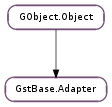

| static | new() |
| available() | |
| available_fast() | |
| clear() | |
| copy(offset) | |
| flush(flush) | |
| map() | |
| masked_scan_uint32(mask, pattern, offset, size) | |
| masked_scan_uint32_peek(mask, pattern, offset, size, value) | |
| prev_dts() | |
| prev_dts_at_offset(offset) | |
| prev_pts() | |
| prev_pts_at_offset(offset) | |
| push(buf) | |
| take() | |
| take_buffer(nbytes) | |
| take_buffer_fast(nbytes) | |
| take_list(nbytes) | |
| unmap() |
None
None
Bases: GObject.Object
This class is for elements that receive buffers in an undesired size. While for example raw video contains one image per buffer, the same is not true for a lot of other formats, especially those that come directly from a file. So if you have undefined buffer sizes and require a specific size, this object is for you.
An adapter is created with GstBase.Adapter.new (). It can be freed again with GObject.Object.unref ().
The theory of operation is like this: All buffers received are put into the adapter using GstBase.Adapter.push () and the data is then read back in chunks of the desired size using GstBase.Adapter.map ()/gst_adapter_unmap() and/or GstBase.Adapter.copy (). After the data has been processed, it is freed using GstBase.Adapter.unmap ().
Other methods such as GstBase.Adapter.take () and GstBase.Adapter.take_buffer () combine GstBase.Adapter.map () and GstBase.Adapter.unmap () in one method and are potentially more convenient for some use cases.
For example, a sink pad’s chain function that needs to pass data to a library in 512-byte chunks could be implemented like this:
static GstFlowReturn
sink_pad_chain (GstPad *pad, GstObject *parent, GstBuffer *buffer)
{
MyElement *this;
GstAdapter *adapter;
GstFlowReturn ret = GST_FLOW_OK;
this = MY_ELEMENT (parent);
adapter = this->adapter;
// put buffer into adapter
gst_adapter_push (adapter, buffer);
// while we can read out 512 bytes, process them
while (gst_adapter_available (adapter) >= 512 && ret == GST_FLOW_OK) {
const guint8 *data = gst_adapter_map (adapter, 512);
// use flowreturn as an error value
ret = my_library_foo (data);
gst_adapter_unmap (adapter);
gst_adapter_flush (adapter, 512);
}
return ret;
}
For another example, a simple element inside GStreamer that uses GstBase.Adapter is the libvisual element.
An element using GstBase.Adapter in its sink pad chain function should ensure that when the FLUSH_STOP event is received, that any queued data is cleared using GstBase.Adapter.clear (). Data should also be cleared or processed on EOS and when changing state from Gst.State.PAUSED to Gst.State.READY.
Also check the Gst.BufferFlags.DISCONT flag on the buffer. Some elements might need to clear the adapter after a discontinuity.
The adapter will keep track of the timestamps of the buffers that were pushed. The last seen timestamp before the current position can be queried with GstBase.Adapter.prev_pts (). This function can optionally return the number of bytes between the start of the buffer that carried the timestamp and the current adapter position. The distance is useful when dealing with, for example, raw audio samples because it allows you to calculate the timestamp of the current adapter position by using the last seen timestamp and the amount of bytes since. Additionally, the GstBase.Adapter.prev_pts_at_offset () can be used to determine the last seen timestamp at a particular offset in the adapter.
A last thing to note is that while GstBase.Adapter is pretty optimized, merging buffers still might be an operation that requires a malloc() and memcpy() operation, and these operations are not the fastest. Because of this, some functions like GstBase.Adapter.available_fast () are provided to help speed up such cases should you want to. To avoid repeated memory allocations, GstBase.Adapter.copy () can be used to copy data into a (statically allocated) user provided buffer.
GstBase.Adapter is not MT safe. All operations on an adapter must be serialized by the caller. This is not normally a problem, however, as the normal use case of GstBase.Adapter is inside one pad’s chain function, in which case access is serialized via the pad’s STREAM_LOCK.
Note that GstBase.Adapter.push () takes ownership of the buffer passed. Use gst_buffer_ref() before pushing it into the adapter if you still want to access the buffer later. The adapter will never modify the data in the buffer pushed in it.
Last reviewed on 2009-05-13 (0.10.24).
| Returns: | a new GstBase.Adapter |
|---|---|
| Return type: | GstBase.Adapter |
Creates a new GstBase.Adapter. Free with GObject.Object.unref ().
| Returns: | number of bytes available in adapter |
|---|---|
| Return type: | int |
Gets the maximum amount of bytes available, that is it returns the maximum value that can be supplied to GstBase.Adapter.map () without that function returning None.
| Returns: | number of bytes that are available in adapter without expensive operations |
|---|---|
| Return type: | int |
Gets the maximum number of bytes that are immediately available without requiring any expensive operations (like copying the data into a temporary buffer).
Removes all buffers from adapter.
| Parameters: | offset (int) – the bytes offset in the adapter to start from |
|---|---|
| Return type: | dest: [int] |
Copies size bytes of data starting at offset out of the buffers contained in GstBase.Adapter into an array dest provided by the caller.
The array dest should be large enough to contain size bytes. The user should check that the adapter has (offset + size ) bytes available before calling this function.
| Parameters: | flush (int) – the number of bytes to flush |
|---|
Flushes the first flush bytes in the adapter. The caller must ensure that at least this many bytes are available.
See also: GstBase.Adapter.map (), GstBase.Adapter.unmap ()
| Returns: | a pointer to the first size bytes of data, or None |
|---|---|
| Return type: | [int] |
Gets the first size bytes stored in the adapter. The returned pointer is valid until the next function is called on the adapter.
Note that setting the returned pointer as the data of a Gst.Buffer is incorrect for general-purpose plugins. The reason is that if a downstream element stores the buffer so that it has access to it outside of the bounds of its chain function, the buffer will have an invalid data pointer after your element flushes the bytes. In that case you should use GstBase.Adapter.take (), which returns a freshly-allocated buffer that you can set as Gst.Buffer memory or the potentially more performant GstBase.Adapter.take_buffer ().
Returns None if size bytes are not available.
| Parameters: | |
|---|---|
| Returns: | offset of the first match, or -1 if no match was found. Example: // Assume the adapter contains 0x00 0x01 0x02 ... 0xfe 0xff gst_adapter_masked_scan_uint32 (adapter, 0xffffffff, 0x00010203, 0, 256); // -> returns 0 gst_adapter_masked_scan_uint32 (adapter, 0xffffffff, 0x00010203, 1, 255); // -> returns -1 gst_adapter_masked_scan_uint32 (adapter, 0xffffffff, 0x01020304, 1, 255); // -> returns 1 gst_adapter_masked_scan_uint32 (adapter, 0xffff, 0x0001, 0, 256); // -> returns -1 gst_adapter_masked_scan_uint32 (adapter, 0xffff, 0x0203, 0, 256); // -> returns 0 gst_adapter_masked_scan_uint32 (adapter, 0xffff0000, 0x02030000, 0, 256); // -> returns 2 gst_adapter_masked_scan_uint32 (adapter, 0xffff0000, 0x02030000, 0, 4); // -> returns -1 |
| Return type: |
Scan for pattern pattern with applied mask mask in the adapter data, starting from offset offset.
The bytes in pattern and mask are interpreted left-to-right, regardless of endianness. All four bytes of the pattern must be present in the adapter for it to match, even if the first or last bytes are masked out.
It is an error to call this function without making sure that there is enough data (offset+size bytes) in the adapter.
This function calls GstBase.Adapter.masked_scan_uint32_peek () passing None for value.
| Parameters: |
|
|---|---|
| Returns: | offset of the first match, or -1 if no match was found. |
| Return type: |
Scan for pattern pattern with applied mask mask in the adapter data, starting from offset offset. If a match is found, the value that matched is returned through value, otherwise value is left untouched.
The bytes in pattern and mask are interpreted left-to-right, regardless of endianness. All four bytes of the pattern must be present in the adapter for it to match, even if the first or last bytes are masked out.
It is an error to call this function without making sure that there is enough data (offset+size bytes) in the adapter.
| Returns: | The previously seen dts. |
|---|---|
| Return type: | int, distance: int |
Get the dts that was before the current byte in the adapter. When distance is given, the amount of bytes between the dts and the current position is returned.
The dts is reset to Gst.CLOCK_TIME_NONE and the distance is set to 0 when the adapter is first created or when it is cleared. This also means that before the first byte with a dts is removed from the adapter, the dts and distance returned are Gst.CLOCK_TIME_NONE and 0 respectively.
| Parameters: | offset (int) – the offset in the adapter at which to get timestamp |
|---|---|
| Returns: | The previously seen dts at given offset. |
| Return type: | int, distance: int |
Get the dts that was before the byte at offset offset in the adapter. When distance is given, the amount of bytes between the dts and the current position is returned.
The dts is reset to Gst.CLOCK_TIME_NONE and the distance is set to 0 when the adapter is first created or when it is cleared. This also means that before the first byte with a dts is removed from the adapter, the dts and distance returned are Gst.CLOCK_TIME_NONE and 0 respectively.
| Returns: | The previously seen pts. |
|---|---|
| Return type: | int, distance: int |
Get the pts that was before the current byte in the adapter. When distance is given, the amount of bytes between the pts and the current position is returned.
The pts is reset to Gst.CLOCK_TIME_NONE and the distance is set to 0 when the adapter is first created or when it is cleared. This also means that before the first byte with a pts is removed from the adapter, the pts and distance returned are Gst.CLOCK_TIME_NONE and 0 respectively.
| Parameters: | offset (int) – the offset in the adapter at which to get timestamp |
|---|---|
| Returns: | The previously seen pts at given offset. |
| Return type: | int, distance: int |
Get the pts that was before the byte at offset offset in the adapter. When distance is given, the amount of bytes between the pts and the current position is returned.
The pts is reset to Gst.CLOCK_TIME_NONE and the distance is set to 0 when the adapter is first created or when it is cleared. This also means that before the first byte with a pts is removed from the adapter, the pts and distance returned are Gst.CLOCK_TIME_NONE and 0 respectively.
| Parameters: | buf (Gst.Buffer) – a Gst.Buffer to add to queue in the adapter |
|---|
Adds the data from buf to the data stored inside adapter and takes ownership of the buffer.
| Returns: | oven-fresh hot data, or None if nbytes bytes are not available |
|---|---|
| Return type: | [int] |
Returns a freshly allocated buffer containing the first nbytes bytes of the adapter. The returned bytes will be flushed from the adapter.
Caller owns returned value. GLib.free after usage.
Free-function: GLib.free
| Parameters: | nbytes (int) – the number of bytes to take |
|---|---|
| Returns: | a Gst.Buffer containing the first nbytes of the adapter, or None if nbytes bytes are not available. gst_buffer_unref() when no longer needed. |
| Return type: | Gst.Buffer |
Returns a Gst.Buffer containing the first nbytes bytes of the adapter. The returned bytes will be flushed from the adapter. This function is potentially more performant than GstBase.Adapter.take () since it can reuse the memory in pushed buffers by subbuffering or merging. This function will always return a buffer with a single memory region.
Note that no assumptions should be made as to whether certain buffer flags such as the DISCONT flag are set on the returned buffer, or not. The caller needs to explicitly set or unset flags that should be set or unset.
Caller owns a reference to the returned buffer. gst_buffer_unref() after usage.
Free-function: gst_buffer_unref
| Parameters: | nbytes (int) – the number of bytes to take |
|---|---|
| Returns: | a Gst.Buffer containing the first nbytes of the adapter, or None if nbytes bytes are not available. gst_buffer_unref() when no longer needed. |
| Return type: | Gst.Buffer |
Returns a Gst.Buffer containing the first nbytes of the adapter. The returned bytes will be flushed from the adapter. This function is potentially more performant than GstBase.Adapter.take_buffer () since it can reuse the memory in pushed buffers by subbuffering or merging. Unlike GstBase.Adapter.take_buffer (), the returned buffer may be composed of multiple non-contiguous Gst.Memory objects, no copies are made.
Note that no assumptions should be made as to whether certain buffer flags such as the DISCONT flag are set on the returned buffer, or not. The caller needs to explicitly set or unset flags that should be set or unset.
This function can return buffer up to the return value of GstBase.Adapter.available () without making copies if possible.
Caller owns a reference to the returned buffer. gst_buffer_unref() after usage.
Free-function: gst_buffer_unref
| Parameters: | nbytes (int) – the number of bytes to take |
|---|---|
| Returns: | a GLib.List of buffers containing the first nbytes of the adapter, or None if nbytes bytes are not available |
| Return type: | [Gst.Buffer] |
Returns a GLib.List of buffers containing the first nbytes bytes of the adapter. The returned bytes will be flushed from the adapter. When the caller can deal with individual buffers, this function is more performant because no memory should be copied.
Caller owns returned list and contained buffers. gst_buffer_unref() each buffer in the list before freeing the list after usage.
Releases the memory obtained with the last GstBase.Adapter.map ().